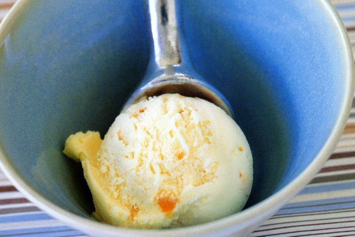

Back Home
Ice Cream

Make your own Ice Cream with this easy recipe
This recipe does contain eggs and milk so be careful for those with allergies!
Ingredients
- 300ml thick cream
- 300ml milk
- 1 vanilla bean split
- 6 egg yolks
- 175g castor sugar
- 1 tsp vanilla extract
Steps
- Place the cream and milk in a saucepan. Scrape in the vanilla seeds and add the bean, too. Bring to the boil, then turn off the heat and set aside for 10 minutes to infuse. Place the egg yolks, sugar and vanilla extract in the bowl of an electric mixer. Beat until pale. Carefully pour the milk over, then return to a clean saucepan.
- Cook over low heat, stirring, for about five minutes until it is slightly thickened and coats the back of a wooden spoon. (This simple custard forms the basis of a classic ice-cream recipe.)
- Set aside to cool, then refrigerate for 30 minutes.
- Place custard in a plastic container in the freezer until frozen at the edges. Remove from freezer. Beat with an electric beater. Re-freeze. Repeat this process two more times. (Alternatively, churn in an ice-cream machine according to the manufacturer's directions.)